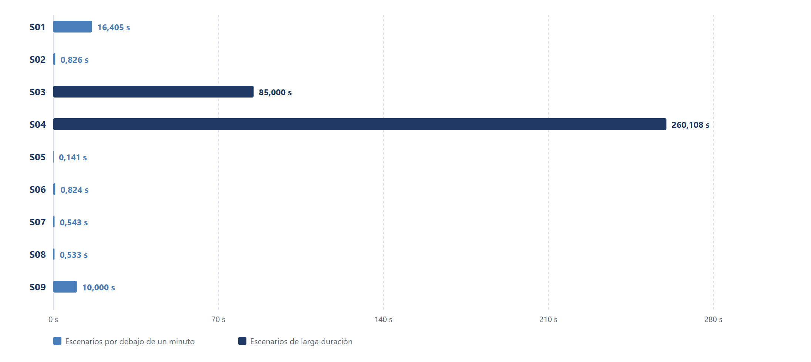
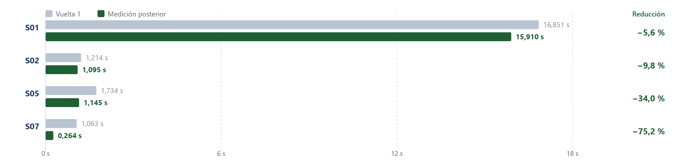

Dos aplicaciones de la metodología sobre una misma campaña de diez escenarios, con los indicadores declarados en la operacionalización de variables y una fuente identificada para cada cifra.
La metodología Honeypot se aplica en dos ocasiones sobre una misma campaña de diez escenarios, cuyos resultados se presentan siguiendo el orden de ejecución y análisis establecido en la investigación. La exposición comienza con el resultado global de la aplicación, continúa con la descripción de las condiciones comunes de medición y desarrolla los resultados obtenidos por cada prototipo, para finalizar con la comparación entre ambos y la síntesis de los principales hallazgos. Esta organización permite examinar el comportamiento general de la metodología y profundizar en los resultados específicos que evidencian su funcionamiento y evolución.
Para interpretar adecuadamente los resultados, las cifras se distinguen según su procedencia y el tipo de respaldo disponible, considerando tres categorías que se identifican expresamente en las tablas y sus notas. La primera comprende los valores declarados directamente en los archivos de evidencia, como la cantidad de escenarios ejecutados o el número de archivos cuya huella se ha verificado. La segunda incluye los cálculos derivados de esos valores originales, entre los que se encuentran los percentiles y las reducciones porcentuales. La tercera corresponde a los datos consolidados por los tableros de resultados que no se conservan de manera independiente en los archivos de evidencia.
Esta clasificación permite diferenciar los resultados según las posibilidades de verificación que ofrece cada fuente y establecer el respaldo documental correspondiente a cada cifra. Los datos de la primera categoría se contrastan con los archivos que los declaran, mientras que los de la segunda se recalculan a partir de los valores de origen publicados en las tablas con tres decimales. Por su parte, los datos de la tercera categoría se contrastan con las capturas de los tableros correspondientes, que documentan los valores consolidados y el estado de los indicadores representados.
Lectura de los indicadores declarados en los tres momentos de medición, sin reducir el conjunto a un valor único.
Los resultados de la aplicación de la metodología se presentan a partir de los indicadores definidos en la operacionalización de variables, de manera que su evolución se analice considerando tres momentos de medición. Los tres momentos son la aplicación del Prototipo 1 en el TaxFisco Research Lab, la primera vuelta del Prototipo 2 en el laboratorio del Servicio de Impuestos Nacionales y la medición final de este segundo prototipo.
Cada indicador permite medir un aspecto específico de la metodología y se calcula de acuerdo con su propia fórmula y su denominador, de manera que los resultados se interpreten según la condición que mide cada indicador, sin combinar valores que representan aspectos diferentes. La cobertura permite determinar cuántos escenarios de la campaña cuentan con un tiempo de detección registrado, mientras que el tiempo de detección mide cuánto tarda el sistema en registrar un evento. De manera complementaria, la calidad de la evidencia permite medir el cumplimiento de los criterios establecidos para su conservación, mientras que el indicador de lecciones aprendidas refleja la resolución documentada de las limitaciones identificadas durante las pruebas.
La Tabla 1 reúne los resultados de estos indicadores en los tres momentos de medición, de manera que para cada uno se presente el aspecto medido, el indicador correspondiente, los valores obtenidos y las referencias que permiten identificar su origen en la operacionalización de variables y en los apartados de resultados. Esta organización permite distinguir los avances en la cobertura de detección de los resultados relacionados con el tiempo de respuesta, la conservación de la evidencia y la resolución de las limitaciones identificadas.
Tabla 1
Planos de resultado, indicadores declarados y fuentes de respaldo
| Plano | Pregunta que responde | Indicador declarado | Resultado principal | Fuente y sección que lo sustenta |
|---|---|---|---|---|
| Cobertura de la medición | ¿Cuántos escenarios de la campaña cuentan con un tiempo registrado? | Porcentaje de escenarios con medición registrada (apartado 1.6) | 9 de 10 en el Prototipo 1; 4 de 10 en la primera vuelta y 10 de 10 en la medición final del Prototipo 2 | Reportes de indicadores de cada laboratorio (apartado 4.3.5.5) |
| Rapidez de la detección | ¿Cuánto tarda la cadena en registrar el primer evento? | Tiempo medio de detección (apartado 2.1.1.3) | Media de 41,598 s sobre nueve mediciones en el Prototipo 1; en el Prototipo 2, el percentil 95 pasa de 14,58 s a 9,27 s y la media final es de 2,02 s | Reportes de indicadores y tablero del Prototipo 2 (apartados 4.3.5.5 y 4.3.6.6) |
| Cobertura técnica | ¿Cuántas técnicas y tácticas de la campaña cuentan con una fuente de detección? | Índice ATT& (apartado 1.6) | Prototipo 1: 10 de 10 técnicas y 6 de 6 tácticas; primera vuelta del Prototipo 2: 4 de 10 técnicas y 3 de 6 tácticas; medición final: 10 de 10 técnicas y 6 de 6 tácticas | Reporte de cobertura (apartado 4.3.5.5) |
| Custodia de la evidencia | ¿Qué resultado obtiene la medición de la custodia de la evidencia? | Subíndice de evidencia (apartado 1.6) | 100 sobre 100 en los tres momentos, verificado sobre la evidencia de cada escenario de la campaña | Reportes de indicadores y tablero del Prototipo 2 (apartados 4.3.5.5 y 4.3.6.6) |
| Registro de correcciones | ¿Las limitaciones identificadas cuentan con una resolución documentada? | Subíndice de lecciones (apartado 1.6) | 3 lecciones en el Prototipo 1; 7 de 7 en la primera vuelta y 14 de 14 en la medición final del Prototipo 2 | Tablero de resultados del Prototipo 2 (apartado 4.3.6.6) |
Los indicadores de la Tabla 1 no comparten una misma unidad de medida, por lo que sus resultados deben interpretarse de forma independiente y no pueden resumirse en un único valor. El tiempo medio de detección se expresa en segundos y permite examinar la rapidez con la que se registra el primer evento, mientras que el Índice ATT& representa la cobertura de las técnicas y tácticas de la campaña mediante fuentes de detección. El subíndice de evidencia mide la condición de la evidencia conforme al criterio definido para ese indicador, mientras que el subíndice de lecciones refleja el estado de las correcciones documentadas. Por tanto, un resultado del 100 % en uno de estos indicadores no implica que los demás alcancen el mismo nivel ni que todas las actividades se detecten con idéntica rapidez.
Para examinar con mayor detalle la cobertura alcanzada en los tres momentos, la Tabla 2 presenta las cantidades registradas y las proporciones correspondientes a los escenarios, las técnicas y las tácticas de la campaña. Estos tres indicadores comparten una estructura de cálculo basada en la relación entre los elementos que cumplen una condición y el total previsto para cada categoría, que asciende a diez escenarios, diez técnicas y seis tácticas. Los indicadores de evidencia y de lecciones conservan sus propios denominadores, por lo que se presentan por separado y no se incorporan al cálculo de las proporciones de cobertura representadas en la figura.
Tabla 2
Indicadores de cobertura y resultados de la evidencia y las lecciones en los tres momentos medidos
| Indicador | Denominador | Prototipo 1 | Prototipo 2 · vuelta 1 | Prototipo 2 · medición final |
|---|---|---|---|---|
| Escenarios con tiempo de detección registrado | 10 escenarios | 9 de 10 · 90 % | 4 de 10 · 40 % | 10 de 10 · 100 % |
| Técnicas de la campaña con fuente de detección | 10 técnicas | 10 de 10 · 100 % | 4 de 10 · 40 % | 10 de 10 · 100 % |
| Tácticas con fuente de detección | 6 tácticas | 6 de 6 · 100 % | 3 de 6 · 50 % | 6 de 6 · 100 % |
| Calidad de la evidencia por escenario | Puntuación sobre 100 | 100 de 100 | 100 de 100 | 100 de 100 |
| Lecciones registradas y resueltas | Hallazgos de la aplicación | 3 | 7 de 7 | 14 de 14 |
Los resultados de la Tabla 2 permiten precisar qué significa alcanzar el 100 % en cada indicador de cobertura, porque un valor completo no describe por sí solo lo que mide el laboratorio. En el Prototipo 1, las diez técnicas y las seis tácticas cuentan con fuentes de detección, aunque solo nueve de los diez escenarios tienen un tiempo registrado, de manera que la cobertura de técnicas y tácticas alcanza el 100 % mientras que la cobertura de escenarios llega al 90 %. Esta diferencia muestra que disponer de fuentes asignadas a todas las técnicas y tácticas no garantiza que todos los escenarios produzcan una medición temporal durante la ejecución de la campaña.
En la primera vuelta del Prototipo 2, los tres indicadores de cobertura presentan valores inferiores a los del Prototipo 1, ya que solo cuatro de los diez escenarios cuentan con tiempo registrado, cuatro de las diez técnicas disponen de una fuente de detección y tres de las seis tácticas tienen una fuente asignada. En la medición final, los tres indicadores alcanzan el 100 %, porque los diez escenarios cuentan con tiempos registrados, las diez técnicas tienen fuentes de detección y las seis tácticas disponen de fuentes asignadas. En este caso, el 100 % expresa el cumplimiento completo de la condición definida para cada indicador, no una detección instantánea de todas las actividades ni la ausencia de limitaciones en los tiempos de respuesta.
La calidad de la evidencia alcanza 100 sobre 100 en los tres momentos medidos porque responde a una lista de cotejo aplicada a la carpeta de evidencia de cada escenario. La lista exige cuatro condiciones, que son un archivo de huella o un registro de texto, las marcas de tiempo de inicio y de fin, el identificador de la técnica que ejerce el escenario y el archivo de resultados. Los diez escenarios del Prototipo 1 cumplen las cuatro condiciones, mientras que el tablero del Prototipo 2 declara la misma puntuación en sus dos vueltas sin publicar el detalle de cada una. Un valor de 100 sobre 100 en este indicador no significa que todos los ataques se hayan detectado ni que todos los tiempos hayan sido cortos, porque su denominador es el escenario y no el evento.
En cuanto a las lecciones aprendidas, el Prototipo 1 registra tres durante su fase de medición, mientras que el Prototipo 2 pasa de siete en la primera vuelta a catorce en la medición final. En las dos vueltas del segundo laboratorio coinciden las lecciones registradas y las resueltas, de manera que esa acumulación refleje el ciclo de corrección aplicado sin constituir una proporción de cobertura de la campaña. De esta forma, la tabla distingue entre los indicadores que miden la cobertura técnica y aquellos que describen la evidencia conservada y el aprendizaje registrado durante la aplicación de los dos prototipos.
La Figura 1 reúne los seis indicadores principales en un panel de tarjetas con los valores de cada momento medido, con el propósito de mostrar la evolución de la cobertura, el tiempo y el registro de aprendizaje sobre los dos prototipos. La inspección visual muestra que los tres momentos presentan patrones distintos según la dimensión observada, con valores más altos en el Prototipo 2 · final sobre la cobertura de escenarios, técnicas y tácticas.
Figura 1
La Figura 2 sintetiza la cobertura alcanzada en cada categoría del marco y cada momento del estudio mediante un mapa de calor, con el propósito de presentar de un vistazo los saltos entre la primera vuelta y la medición final del Prototipo 2. La inspección visual muestra que la celda con menor proporción (40 % de cobertura de escenarios en la primera vuelta del Prototipo 2) contrasta con las seis celdas que alcanzan el 100 % en los otros momentos del estudio.
Figura 2
Los resultados de la Figura 2 muestran que la cobertura declarada no evoluciona de manera uniforme entre los tres indicadores en cada momento del estudio; varía en función del comportamiento de la cadena y de la completitud del catálogo de fuentes configurado en cada vuelta de la campaña. La Figura 3 complementa este mapa al ofrecer una vista comparativa de los tres indicadores en una escala porcentual compartida, lo que ayuda a situar el salto entre los momentos del Prototipo 2 sobre la misma referencia numérica.
Figura 3
La Figura 3 representa únicamente los tres indicadores de cobertura de escenarios, técnicas y tácticas, ya que comparten una escala porcentual y permiten comparar el cumplimiento de condiciones definidas sobre los totales previstos de la campaña. La calidad de la evidencia y el registro de lecciones no aparecen en el gráfico porque se calculan sobre archivos y lecciones, cuyos denominadores no corresponden a los elementos representados en las barras, de manera que la separación evite que indicadores de distinta naturaleza se presenten como si midieran la misma condición.
La escala del gráfico llega al 100 % porque ese valor representa el cumplimiento total de la condición definida para cada indicador, de manera que una cobertura de escenarios del 100 % signifique que los diez escenarios cuentan con un tiempo registrado. Una barra de técnicas que alcanza el 100 % indica que las diez técnicas de la campaña cuentan con una fuente de detección, mientras que una barra de tácticas en el mismo nivel indica que las seis tácticas tienen una fuente asignada. Estos resultados describen la cobertura alcanzada, aunque no indican por sí mismos cuánto tarda la detección ni garantizan que todos los eventos lleguen a registrarse dentro del primer segundo de ejecución.
La comparación visual muestra que el Prototipo 1 alcanza el 90 % de cobertura de escenarios y el 100 % en técnicas y tácticas, mientras que en la primera vuelta del Prototipo 2 ningún indicador de cobertura supera el 50 %. En la medición final del segundo prototipo las tres barras llegan al 100 %, lo que indica que se cumplen las condiciones de cobertura establecidas para las tres categorías de la campaña. La evolución entre las dos vueltas del Prototipo 2 coincide con la ampliación de los escenarios medidos y con el incremento de las técnicas y tácticas que disponen de fuentes de detección.
La diferencia entre la primera vuelta y la medición final del Prototipo 2 debe interpretarse como un cambio en la cobertura registrada durante el proceso de corrección, no como una comparación aislada de la velocidad de detección. Entre ambas mediciones, los escenarios con tiempo registrado aumentan de cuatro a diez, las técnicas con fuente de detección pasan de cuatro a diez y las tácticas con fuente asignada aumentan de tres a seis. Además, las lecciones con resolución documentada pasan de siete a catorce, mientras que la puntuación de calidad de la evidencia permanece en 100 sobre 100, de manera que estos resultados muestren cambios en la cobertura y en el registro de las correcciones junto con la conservación de la puntuación declarada para la evidencia.
La rapidez de detección se analiza de manera complementaria, mediante los tiempos expresados en segundos y los estadísticos de cada ejecución, que aportan información sobre el comportamiento temporal de la cadena de detección y no se obtiene únicamente de las barras de cobertura. En el Prototipo 1, la media de detección es de 41,598 segundos sobre nueve mediciones; en el Prototipo 2, el percentil 95 disminuye de 14,58 a 9,27 segundos entre la primera vuelta y la medición final, mientras que la media final alcanza 2,02 segundos. Por ello, el resultado global de la metodología se interpreta a partir del conjunto de indicadores, manteniendo diferenciadas la cobertura de los elementos previstos, la rapidez de detección, la puntuación de la evidencia y la resolución documentada de las lecciones aprendidas.
Lectura de los indicadores declarados por el laboratorio del primer prototipo sobre los diez escenarios ejecutados.
La aplicación del primer prototipo de la metodología se realiza en el TaxFisco Research Lab mediante una campaña de diez escenarios ejecutados en un entorno controlado (diseño del prototipo descrito en el capítulo 3, operacionalización en el capítulo 4), con el propósito de examinar el funcionamiento de la cadena de detección sobre un conjunto definido de actividades simuladas. El análisis de los tiempos, la cobertura técnica, la correspondencia normativa y las lecciones aprendidas describe cómo responde el prototipo ante estas actividades, así como la organización de la información generada durante su ejecución.
De los diez escenarios ejecutados, nueve cuentan con un tiempo de detección registrado sobre los cuales se calculan los indicadores temporales, mientras que los resultados de cobertura, correspondencia normativa y lecciones se declaran según sus respectivos registros. De esta manera, cada resultado se interpreta en función de la información que representa y contribuye a caracterizar el funcionamiento del primer prototipo, con lo que se consolida una primera lectura del desempeño del laboratorio.
La Tabla 3 presenta los indicadores obtenidos durante esta primera aplicación y especifica el reporte de origen de cada dato, lo que permite mantener la relación entre los resultados y los registros generados por el laboratorio. El promedio de detección es de 41,598 segundos, con un valor mínimo de 0,141 segundos y un máximo de 260,108 segundos; además, siete de las nueve mediciones se encuentran por debajo de un minuto. En cuanto a la cobertura técnica, el inventario comprende diecisiete técnicas (técnicas del marco MITRE ATT&CK, capítulo 1, sección 1.3.5) y el reporte declara diez técnicas detectadas, distribuidas en seis tácticas del mismo marco. La correspondencia normativa registra las cinco fases de ISO/IEC 27035-1 de 2023 (capítulo 1, sección 1.3.2) y la aplicación recoge tres lecciones aprendidas, que corresponden a la fase cinco del ciclo de gestión de incidentes considerado por la norma.
Estos indicadores permiten examinar el prototipo desde diferentes perspectivas, con los tiempos mostrando la rapidez con la que se registra el primer evento, la cobertura identificando el alcance técnico declarado, la correspondencia normativa relacionando los componentes con las fases de gestión de incidentes y las lecciones aprendidas documentando los hallazgos durante las pruebas. En conjunto, los datos ofrecen una visión completa del funcionamiento del prototipo sobre el entorno controlado y constituyen la referencia para analizar los resultados de las siguientes aplicaciones de la metodología.
Tabla 3
Indicadores del primer prototipo con su archivo de origen
| Indicador | Valor | Origen |
|---|---|---|
| Escenarios con tiempo de detección registrado | 9 de 10 | Reporte de indicadores |
| Tiempo medio de detección | 41,598 s sobre 9 mediciones | Reporte de indicadores |
| Valor mínimo de detección | 0,141 s | Reporte de indicadores |
| Valor máximo de detección | 260,108 s | Reporte de indicadores |
| Mediciones por debajo del minuto | 7 de 9 | Reporte de indicadores |
| Técnicas implementadas | 17 | Reporte de cobertura |
| Técnicas detectadas | 10 de 10 | Reporte de cobertura |
| Tácticas cubiertas | 6 de 6 | Reporte de cobertura |
| Fases de ISO/IEC 27035 sustentadas | 5 de 5 | Reporte de correspondencia normativa |
| Lecciones aprendidas | 3 | Registro de la fase de medición |
El tiempo medio de detección (MTTD, operacionalizado en el capítulo 4) obtenido en el primer prototipo del TaxFisco Research Lab es de 41,598 segundos, calculado sobre las nueve mediciones disponibles en el reporte del laboratorio al cierre de la campaña. Este resultado se comprende mejor al observar la distribución de las nueve mediciones, con valores entre 0,141 y 260,108 segundos; cinco escenarios presentan tiempos inferiores a un segundo, mientras otros dos registran 85,000 y 260,108 segundos, respectivamente. Estos dos últimos resultados elevan el promedio general, de modo que la media representa el comportamiento conjunto de las mediciones pero no describe por sí sola la rapidez alcanzada en cada escenario. La cadena puede registrar determinados eventos en fracciones de segundo y, en otros casos, el primer registro aparece después de un intervalo más prolongado, por lo que la interpretación del desempeño temporal considera tanto el promedio como los valores individuales para una descripción más precisa de la respuesta observada durante la campaña.
La Figura 4 presenta los tiempos de detección de los nueve escenarios con medición, ordenados de menor a mayor mediante un gráfico de barras horizontales, con el propósito de identificar la concentración de resultados inferiores a un minuto y distinguir los dos escenarios con tiempos superiores a ese intervalo. El rango observado se extiende desde 0,141 segundos del extremo inferior del eje, que corresponde al escenario más breve, hasta 260,108 segundos del extremo superior, ocupado por S04, mientras S03 se sitúa en 85,000 segundos en la franja previa del mismo eje. La inspección visual de las barras muestra una distribución no uniforme, con valores concentrados en intervalos breves del eje y dos valores más elevados que prolongan la duración total del conjunto medido al desplazarlo hacia arriba en el lado derecho.
Figura 4

La inspección visual confirma que siete de los nueve valores se sitúan por debajo del minuto, con marcas comprendidas entre 0,141 s y 16,405 s, mientras los dos escenarios restantes elevan el conjunto; S03 aporta 85,000 s y S04 alcanza 260,108 s, en ese orden ascendente, lo que termina de caracterizar una dispersión heterogénea. La mayoría de las mediciones se sitúa en el orden de las décimas o los pocos segundos, con solo dos escenarios alejados hacia los minutos prolongados, comportamiento que justifica la lectura por orden de magnitud ofrecida en la Figura 5.
La Figura 5 agrupa los nueve tiempos registrados en cuatro bandas de magnitud, con el propósito de examinar dónde se concentran las detecciones por debajo del segundo y por encima del minuto, para describir el peso de cada intervalo en el cálculo del promedio. La inspección visual confirma que cinco de las nueve mediciones se resuelven por debajo del segundo, dos entre uno y treinta segundos, dos por encima del minuto, con una sola banda vacía entre treinta y sesenta segundos. Estos conteos explican la asimetría de la media declarada y refuerzan la lectura por orden de magnitud de los tiempos, ya mostrada en la Figura 4 con la distribución individual del conjunto.
Figura 5
La Figura 6 compara la duración registrada de cada escenario con su tiempo de detección, con el propósito de examinar la relación entre el intervalo de ejecución de las actividades simuladas y el momento en que se registra su primer evento. Para visualizar los valores que van desde las décimas de segundo del extremo inferior hasta los varios minutos del extremo superior del eje, la figura recurre a una escala logarítmica en el eje vertical. Según los registros representados, el MTTD se sitúa dentro de la duración del escenario en S01 y S04, mientras que en S03 y S09 el tiempo de detección supera la duración registrada. Los demás escenarios presentan una duración igual a cero en los datos disponibles, por lo que se muestran sin una referencia temporal positiva para la misma comparación; S10 aparece sin evento de detección registrado.
Figura 6
Esta representación permite interpretar conjuntamente las mediciones temporales y distinguir la duración de las actividades ejecutadas del tiempo que transcurre hasta que la cadena registra el primer evento de cada escenario. Las Figuras 4, 5 y 6 ofrecen en conjunto tres perspectivas complementarias sobre los resultados temporales del primer prototipo, todas ellas integradas para describir la magnitud individual de cada valor, la frecuencia de los tiempos por intervalos de orden de magnitud y la ubicación temporal del registro del primer evento en escala logarítmica. Cinco de las nueve detecciones se producen en menos de un segundo y otras dos mediciones se encuentran entre uno y treinta segundos, con la mayoría de los valores del conjunto situada por debajo de los treinta segundos. Los escenarios S03 y S04 se alejan hacia los minutos prolongados e influyen de manera determinante sobre la media declarada del prototipo, por lo que deben leerse como referencia al interpretar los valores agregados.
La interpretación de la cobertura técnica examina las técnicas contempladas en la campaña y su relación con las tácticas de MITRE ATT&CK (capítulo 1, sección 1.3.5), lo que permite ubicar cada técnica en el marco de comportamiento adversario correspondiente. El inventario del laboratorio del TaxFisco Research Lab comprende diecisiete técnicas (técnicas acotadas además por el requisito RF-6 del capítulo 3, sección 3.1.1) en el conjunto del marco de comportamiento adversario, de las cuales diez forman parte de los escenarios ejecutados en la presente medición. La Figura 7 organiza estas diez técnicas según la táctica correspondiente al marco y presenta, para cada grupo, la cantidad de técnicas con detección registrada en el reporte de cobertura. Esta distribución permite observar cómo se relacionan las actividades simuladas con los registros obtenidos por los componentes de instrumentación, con la cobertura refiriéndose a las técnicas representadas en la campaña, mientras que los indicadores temporales describen cuándo se registra el primer evento de cada actividad.
Figura 7
La Figura 8 distribuye los nueve MTTD declarados por la fuente de instrumentación que registra el primer evento, con el propósito de comparar el comportamiento de cada componente de captura sobre los escenarios que le corresponden. La inspección visual muestra que decoy-api (decoy-api-tributaria, descrita en la arquitectura de contenedores del capítulo 3, sección 3.5) absorbe los escenarios más extensos del eje y los más breves próximos al umbral inferior, mientras cowrie (capítulo 2, sección 2.2.2) y decoy-portal (decoy-portal-tributario, capítulo 3, sección 3.5) registran los restantes en valores intermedios del orden de los segundos.
Figura 8
La inspección visual muestra que las seis tácticas de la campaña presentan detección para todas las técnicas que les corresponden, de manera que la cobertura declarada por el reporte alcanza las diez técnicas repartidas entre seis tácticas y coincide con el indicador global de la Tabla 3. Esta organización permite identificar el comportamiento de la cobertura por táctica en la campaña y observar que ninguna de las técnicas que la integran queda sin una cobertura declarada en el reporte del laboratorio. La atribución temporal de un primer evento constituye un registro distinto, porque el escenario de exfiltración por nombres no produce tiempo de detección en el primer laboratorio, como muestran la Figura 6 y la Figura 8. Esa diferencia entre la cobertura declarada y la atribución instrumentada delimita la deficiencia concreta que el segundo laboratorio corrige, porque la incorporación de su sensor de red permite que el escenario de exfiltración por nombres alcance un tiempo de detección en la medición final.
La Figura 8 distribuye los MTTD declarados según la fuente de instrumentación que registra el primer evento, con el propósito de relacionar las mediciones con los componentes que participaron en la captura de las actividades simuladas. Los nueve tiempos declarados se reparten entre decoy-portal, las variantes de decoy-api y cowrie; se representan mediante escala logarítmica para facilitar la observación simultánea de valores muy diferentes en una misma figura. La inspección visual confirma que decoy-api aparece asociado tanto con tiempos inferiores al segundo como con algunos de los valores más prolongados, mientras que cowrie y decoy-portal registran los restantes en valores intermedios del orden de los segundos.
La lectura conjunta de las Figuras 7 y 8 permite relacionar la cobertura técnica declarada con las fuentes de instrumentación que registran los eventos en la campaña del primer prototipo. La primera organiza las técnicas por táctica y muestra la distribución de la detección declarada; la segunda relaciona los tiempos medidos con los componentes de instrumentación que generaron el primer registro. De este modo, la revisión integra el alcance técnico de la campaña con el comportamiento temporal de los componentes y describe qué técnicas aparecen asociadas con detecciones registradas y qué fuentes participan en esos registros.
La correspondencia normativa documenta la relación entre los componentes del laboratorio del TaxFisco Research Lab y las cinco fases del ciclo de gestión de incidentes consideradas en la norma ISO/IEC 27035-1 de 2023 (capítulo 1, sección 1.3.2). El reporte de correspondencia normativa documenta evidencia de laboratorio para las cinco fases y las registra como sustentadas, lo que permite describir la estructura de la implementación del laboratorio en relación con el proceso de gestión de incidentes de la norma. Este resultado complementa los indicadores temporales y de cobertura, ya que muestra cómo se organiza la metodología respecto de las fases normativas, lo que permite examinar la integración conceptual de los componentes que participan en la captura y el tratamiento de los eventos. La interpretación se basa en la correspondencia documentada por el laboratorio del TaxFisco Research Lab y se integra con los resultados de las pruebas para ofrecer una visión conjunta del primer prototipo en su conjunto.
Durante la fase de medición se registran tres lecciones aprendidas, correspondientes a la fase cinco del ciclo de gestión de incidentes definido por la norma ISO/IEC 27035-1 de 2023 (capítulo 1, sección 1.3.2). Estas recogen los hallazgos identificados durante la aplicación de la metodología y sirven como referencia para preparar el segundo laboratorio, con apartados dedicados a la revisión de la cadena de captura, la conservación de la trazabilidad de los incidentes y la organización de los indicadores. Su registro permite trasladar los hallazgos de la primera aplicación al proceso de ajuste del prototipo siguiente, con modificaciones concretas vinculadas a las observaciones obtenidas durante la ejecución de la campaña. La evolución entre prototipos se examina posteriormente mediante la comparación de los escenarios ejecutados, las fuentes de detección utilizadas, los tiempos registrados y las lecciones aprendidas incorporadas al ciclo siguiente.
Los resultados obtenidos en el TaxFisco Research Lab proporcionan una primera caracterización del funcionamiento de la metodología sobre un entorno controlado y constituyen la línea de base para la comparación posterior con el segundo prototipo. De los diez escenarios ejecutados en la campaña del primer prototipo, nueve cuentan con un tiempo de detección registrado y siete de esas mediciones son inferiores a un minuto en el reporte del laboratorio. El promedio declarado es de 41,598 segundos, con valores que oscilan entre 0,141 y 260,108 segundos; la distribución muestra cinco detecciones por debajo del segundo y dos escenarios con tiempos superiores a un minuto. La lectura conjunta de los indicadores y las figuras muestra que el comportamiento temporal varía entre escenarios, por lo que la media general debe interpretarse a partir de esa distribución. La organización de las técnicas por táctica y la identificación de las fuentes de instrumentación aportan información complementaria sobre el alcance de las detecciones declaradas y sobre los componentes que registran los primeros eventos.
La revisión incorpora también la correspondencia documentada con las cinco fases de ISO/IEC 27035 y el registro de tres lecciones aprendidas, cuyos hallazgos sirven como referencia para el desarrollo del segundo prototipo. La cobertura técnica se presenta a partir de los reportes del laboratorio y del detalle representado en la Figura 7, que muestra la cobertura completa de las seis tácticas de la campaña, de manera que el gráfico y el indicador global de diez técnicas detectadas de diez de la Tabla 3 coinciden sin necesidad de contraste adicional. En conjunto, los resultados del primer prototipo establecen la referencia inicial para comparar la aplicación posterior de la metodología y analizar la evolución de los tiempos, la cobertura técnica y las lecciones aprendidas entre las dos implementaciones.
Lectura del ciclo de iteración del segundo prototipo, con vuelta 1, registro de catorce lecciones y medición final sobre los diez escenarios.
El segundo prototipo de la metodología se aplica en el laboratorio del Servicio de Impuestos Nacionales sobre la misma campaña de diez escenarios declarada en el capítulo 4 (operacionalización de variables). El ejercicio se organiza en una vuelta inicial sin correcciones y en una medición final con catorce lecciones aprendidas (fase cinco del ciclo de gestión de incidentes de ISO/IEC 27035-1 de 2023, capítulo 1, sección 1.3.2) aplicadas antes del cierre del laboratorio.
El segundo laboratorio incorpora tres componentes respecto del primero, todos ellos declarados en la arquitectura de contenedores del capítulo 3 (sección 3.5), definidos como honeypots específicos de dominio (capítulo 2, sección 2.2.5) y caracterizados dentro de la familia general de honeypots descrita en el capítulo 1 (sección 1.2). Esos tres componentes corresponden a un emulador de acceso remoto, un archivo señuelo y un sensor de red, lo que amplía las fuentes de registro de tres en la vuelta inicial a seis en la medición final. Los diez escenarios y las diez técnicas activadas se conservan sin variación respecto del primer laboratorio; las tácticas recorridas se mantienen en seis, con lo que la diferencia entre vueltas refleja el trabajo de corrección aplicado y no un cambio de instrumentación.
La Tabla 4 presenta los indicadores del segundo prototipo en la vuelta inicial y en la medición final, con el propósito de comparar el resultado del ciclo de iteración sobre los mismos diez escenarios. La cobertura temporal pasa del 40 % al 100 % de la campaña; el tiempo medio de detección baja de 5,2155 a 2,0219 segundos; el percentil 95 desciende de 14,583 a 9,266 segundos. Las técnicas con fuente de detección crecen del 40 % al 100 %; las tácticas con fuente suben del 50 % al 100 %; las lecciones aprendidas registradas se duplican de siete a catorce. Los archivos con huella verificada y la calidad de la custodia se mantienen en 91 archivos y en 100 sobre 100 entre ambas vueltas, lo que confirma la estabilidad de la custodia a lo largo del ciclo de iteración.
Tabla 4
Indicadores del segundo prototipo con su archivo de origen y comparación entre vueltas
| Indicador | Vuelta 1 | Medición final | Origen |
|---|---|---|---|
| Escenarios con tiempo de detección registrado | 4 de 10 | 10 de 10 | Reporte de indicadores |
| Tiempo medio de detección | 5,2155 s sobre 4 mediciones | 2,0219 s sobre 10 mediciones | Reporte de indicadores |
| Detección mínima | 1,063 s | 0,000 s | Reporte de indicadores |
| Percentil 95 del MTTD | 14,583 s | 9,266 s | Reporte de indicadores |
| Técnicas con fuente de detección | 4 de 10 | 10 de 10 | Reporte de cobertura |
| Tácticas cubiertas | 3 de 6 | 6 de 6 | Reporte de cobertura |
| Escenarios con detección por debajo de 1 s | 0 de 10 | 7 de 10 | Reporte de indicadores |
| Fases de ISO/IEC 27035 sustentadas | 1 de 5 | 1 de 5 | Verificador automático de la fase |
| Lecciones aprendidas | 7 | 14 | Registro de lecciones aprendidas |
| Archivos de evidencia con huella verificada | 91 | 91 | Custodia de la evidencia |
| Calidad de la custodia | 100 de 100 | 100 de 100 | Custodia de la evidencia |
El análisis temporal del segundo prototipo se concentra en la comparación entre la vuelta inicial y la medición final, dado que ese contraste refleja el efecto del ciclo de corrección sobre los mismos escenarios. La Figura 9 confronta ambas vueltas del laboratorio del Servicio de Impuestos Nacionales para los diez escenarios de la campaña en escala logarítmica, con el propósito de mostrar dónde se reduce la dispersión entre escenarios; los tiempos se calculan según la operacionalización del MTTD declarada en el capítulo 4. El eje arranca en 0,1 s porque siete de los diez escenarios de la medición final se sitúan por debajo del segundo, de manera que un umbral superior los representaría como barras nulas.
Figura 9
La lectura de esa figura separa dos efectos distintos que el ciclo de corrección produce sobre un mismo conjunto de escenarios de la campaña del Servicio de Impuestos Nacionales de Bolivia. En los cuatro escenarios que conservan medición en ambas vueltas el tiempo se reduce en todos los casos, de manera que la reducción se sostenga sobre el mismo par de registros y no sobre el promedio del laboratorio. En los seis escenarios restantes la vuelta inicial no admite valor porque el paso de atribución no asocia la detección a un señuelo concreto, de manera que su entrada en la medición final ampliase la cobertura en lugar de aportar una reducción calculable. El percentil 95 de la distribución desciende de 14,583 a 9,266 segundos entre ambas vueltas del segundo laboratorio, lo que equivale aproximadamente al 36,5 % del valor inicial de esa vuelta.
La cobertura técnica confirma esa lectura, dado que las técnicas y tácticas del marco MITRE ATT&CK (capítulo 1, sección 1.3.5) identifican cada uno de los diez escenarios con fuente de detección en la medición final. El inventario del laboratorio cubre técnicas del marco cuya selección se acota al requisito RF-6 del capítulo 3 (sección 3.1.1); en la medición final, todas las técnicas de la campaña reciben fuente, lo que cierra la cobertura declarada en la Tabla 4.
La Figura 10 distribuye los MTTD de la medición final por escenario en orden descendente, con el propósito de comparar la magnitud de los tiempos una vez aplicadas las correcciones del ciclo. Siete de los diez escenarios de la medición final se sitúan por debajo del segundo y los tres restantes quedan por encima, con valores que oscilan entre 0,000 segundos de S03 y S09 hasta 15,910 segundos de S01; esta distribución muestra una reducción efectiva del percentil 95 junto con una cobertura completa de la campaña.
Figura 10
La Figura 11 clasifica las catorce lecciones aprendidas del ciclo según la fase del ciclo de gestión de incidentes de ISO/IEC 27035-1 de 2023 a la que se adscribe la causa raíz del hallazgo, con el propósito de mostrar cómo se reparte el aprendizaje entre las cinco fases declaradas por la norma. Once lecciones cuentan con causa raíz identificada y corrección aplicada, mientras que las tres restantes se resuelven con una mitigación; el ciclo completo, desde la línea base hasta la medición final, ocupa cuatro horas con veintiséis minutos.
Figura 11
La Figura 12 distribuye los MTTD de la medición final según la fuente de instrumentación que registra el primer evento, con el propósito de describir qué componentes del laboratorio del Servicio de Impuestos Nacionales participan en la detección de cada escenario. La inspección visual confirma que cinco fuentes cubren los diez escenarios sin solapamiento, con tres detecciones aportadas por el portal del señuelo y las variantes de la interfaz de servicios; el emulador de acceso remoto, el archivo señuelo y el sensor de red aportan una detección cada uno, con tiempos que van desde cero hasta 15,910 segundos.
Figura 12
La Figura 13 presenta la duración total del ciclo de iteración del segundo prototipo junto con el resultado verificable que cada etapa registrada aporta al cierre de la campaña en el laboratorio del Servicio de Impuestos Nacionales. El ciclo completo ocupa cuatro horas con veintiséis minutos, cifra que la fuente independiente documenta como un único valor agregado y no como una sucesión de tramos con marca de tiempo propia. La línea base declara cuatro de los diez escenarios con tiempo de detección registrado y una cobertura temporal del 40 %, mientras que la medición final alcanza los diez escenarios y el 100 % de cobertura.
El bloque central recoge las catorce lecciones aprendidas, de las que once identifican su causa raíz y aplican la corrección, mientras que las tres restantes se resuelven con una mitigación porque su causa queda fuera del segmento controlado (capítulo 1, sección 1.3.2). La figura acompaña esa secuencia con dos indicadores que permanecen constantes a lo largo del ciclo, como son el número de archivos con huella y la calidad de custodia, de manera que la ampliación de la cobertura se lee sin afectar la validez forense de la evidencia.
Figura 13
La Figura 14 presenta la relación entre la duración de los escenarios y el tiempo medio de detección registrado en el primer prototipo del TaxFisco Research Lab, con el propósito de examinar cómo se comportan ambas variables cuando se analizan de manera conjunta. Para el laboratorio del Servicio de Impuestos Nacionales, la medición se centra en el tiempo de detección y en las fuentes que registran los eventos, mientras que la duración de cada escenario se conserva como un dato de referencia del primer prototipo (capítulo 4, sección 4.4.2). Por este motivo, la figura utiliza los registros del TaxFisco Research Lab para describir la relación entre ambas magnitudes, aportar una referencia para interpretar los resultados y complementar el análisis de los resultados del segundo prototipo.
En los cinco escenarios que cuentan con valores registrados para ambas variables se observa una correlación de Pearson de 0,95 en escala lineal y de 0,59 en escala logarítmica, de modo que la asociación positiva resulta más marcada cuando los valores se consideran en escala lineal. Al examinar la distribución de los puntos, el escenario S04 destaca por presentar una duración de 9.376 segundos y un tiempo de detección de 260,108 segundos, valores superiores a los de los demás escenarios representados en el gráfico. Esta diferencia influye considerablemente en el coeficiente de correlación y permite comprender por qué la asociación general cambia de manera notable al analizar los registros sin incluir dicho escenario en el conjunto.
Al considerar los cuatro escenarios restantes en el conjunto analizado, el coeficiente de Pearson desciende a 0,24 en escala lineal y se aproxima a cero en escala logarítmica, con un valor de -0,052. La comparación muestra que la magnitud de la correlación depende de la distribución de los escenarios y, en particular, del comportamiento observado en S04, de manera que la correlación del conjunto original depende en buena medida de un único registro. Por tanto, el coeficiente de 0,95 describe la asociación del conjunto original, mientras que los valores obtenidos al examinar los escenarios restantes permiten apreciar con mayor detalle la variación entre los registros. En conjunto, la figura aporta una lectura descriptiva de la relación entre la duración y el tiempo de detección, sin establecer que una mayor duración produzca necesariamente un mayor tiempo de detección. Esta interpretación complementa los indicadores de detección presentados para ambos prototipos y distingue las variables registradas en cada laboratorio, con lo que sostiene la comparación entre las dos aplicaciones de la metodología.
Figura 14
La aplicación de la metodología en el laboratorio del Servicio de Impuestos Nacionales muestra que el ciclo de corrección transforma los indicadores sin modificar el inventario del señuelo, con catorce lecciones aprendidas que llevan los escenarios con medición de cuatro a diez y las detecciones por debajo del segundo de cero a siete. La custodia de la evidencia se mantiene constante a lo largo del ciclo, con 91 archivos con huella y calidad de 100 sobre 100 en ambas vueltas; el percentil 95 baja de 14,583 segundos a 9,266 segundos entre la vuelta inicial y la medición final.
El segundo prototipo establece así una segunda lectura del funcionamiento de la metodología sobre un entorno productivo real, con el inventario del señuelo y la composición de la campaña preservados entre vueltas. La comparación con el primer laboratorio se aborda en el apartado siguiente, mientras que las tres precisiones que el ciclo aporta sobre cobertura, custodia y registro de correcciones pasan a formar parte de la lectura conjunta del 4.4.5.
Lectura conjunta de los indicadores de los dos laboratorios, con lo que se conserva entre las tres mediciones y lo que cambia entre ellas.
La comparación entre los dos prototipos se apoya en una campaña común de diez escenarios, diez técnicas y seis tácticas, de manera que la diferencia entre los tres momentos medidos provenga del instrumental y no de un cambio en la composición de la campaña. Los tres momentos corresponden al primer laboratorio, a la primera vuelta del segundo y a su medición final, de manera que la comparación conserve una base idéntica de actividades simuladas. La Tabla 5 reúne los indicadores de los tres momentos en una sola lectura, con lo que cada indicador conserve su denominador declarado y la comparación se establezca sobre la misma estructura de cuentas.
La lectura conjunta muestra que la cobertura de escenarios es el indicador con mayor recorrido, porque pasa de nueve de diez a cuatro de diez y regresa a diez de diez, mientras que la custodia de la evidencia permanece invariable en los tres momentos con 100 sobre 100. Las técnicas y las tácticas comparten ese mismo recorrido, con un descenso en la primera vuelta del que se recuperan por completo en la medición final, mientras que las lecciones aprendidas crecen de tres a siete y a catorce porque cada vuelta incorpora las correcciones de la anterior. El percentil 95 solo puede compararse entre las dos vueltas del segundo laboratorio, porque el primer reporte no lo declara; esa comparación muestra una reducción de 14,583 a 9,266 segundos en la medición final.
Tabla 5
Indicadores de los tres momentos medidos con su denominador declarado
| Indicador | Prototipo 1 | Prototipo 2 · vuelta 1 | Prototipo 2 · medición final | Denominador declarado |
|---|---|---|---|---|
| Escenarios con tiempo de detección registrado | 9 de 10 | 4 de 10 | 10 de 10 | 10 escenarios |
| Técnicas de la campaña con fuente de detección | 10 de 10 | 4 de 10 | 10 de 10 | 10 técnicas |
| Tácticas con fuente de detección | 6 de 6 | 3 de 6 | 6 de 6 | 6 tácticas |
| Escenarios con detección inferior a 1 s | 5 de 9 | 0 de 10 | 7 de 10 | Escenarios con medición |
| Tiempo medio de detección | 41,598 s sobre 9 mediciones | 5,2155 s sobre 4 mediciones | 2,0219 s sobre 10 mediciones | Escenarios con medición |
| Detección mínima | 0,141 s | 1,063 s | 0,000 s | Escenarios con medición |
| Percentil 95 del tiempo de detección | No declarado | 14,583 s | 9,266 s | Escenarios con medición |
| Lecciones aprendidas registradas y resueltas | 3 | 7 de 7 | 14 de 14 | Hallazgos de la aplicación |
| Fases de ISO/IEC 27035 sustentadas | 5 de 5 | 1 de 5 | 1 de 5 | 5 fases del ciclo de gestión |
| Archivos de evidencia con huella verificada | 68 | 91 | 91 | Archivos de la campaña |
| Calidad de la evidencia verificada | 100 de 100 | 100 de 100 | 100 de 100 | 100 puntos de la lista de cotejo |
Dentro del segundo laboratorio solo cuatro escenarios conservan medición en las dos vueltas, de manera que la comparación se sostenga en el escenario y no en el promedio de la campaña. La Figura 15 reúne esos cuatro registros con la reducción porcentual que cada uno presenta, de manera que el contraste se apoye en el mismo par de mediciones y no en un promedio del laboratorio. La reducción más marcada corresponde al uso de credenciales válidas, que pasa de 1,063 a 0,264 segundos, mientras que el reconocimiento activo obtiene la menor con un 5,6 % porque su señal la produce la vista del atacante y no el señuelo. Los seis escenarios restantes carecen de valor de referencia en la primera vuelta, de manera que no admitan una reducción calculable y su aportación al indicador se reconozca como ampliación de la cobertura de medición.
Figura 15

La lectura de esa figura confirma que la reducción se concentra en los escenarios de duración breve, mientras que el escenario más extenso conserva un tiempo cercano al de la vuelta inicial y obtiene la menor mejora de las cuatro. El contraste entre caída absoluta y caída porcentual explica ese orden, porque el reconocimiento activo pierde 0,941 segundos frente a los 0,799 del uso de credenciales válidas, de manera que el escenario de mayor duración sea el que más tiempo recupera y a la vez el que menor proporción mejora. La comparación no incluye los seis escenarios que solo alcanzan medición en la medición final, de manera que la mejora global del percentil 95 no se atribuya al mismo conjunto de escenarios que sostiene esta figura.
El reparto de la detección entre componentes ofrece la comparación más directa entre los dos laboratorios, porque en ambos casos cada escenario recibe un primer registro identificable aunque el inventario de señuelos difiera. La Figura 16 reúne los dos repartos en dos paneles contiguos, de manera que el lector compare la cobertura de los dos laboratorios sin abandonar el apartado ni buscar la fuente en otro gráfico. El panel izquierdo reparte los nueve escenarios medidos del Prototipo 1 entre cinco componentes, con la interfaz de servicios al frente con tres escenarios y el emulador de acceso remoto junto con la interfaz de registro de ruta con dos cada uno. El panel derecho reparte los diez escenarios de la medición final del Prototipo 2 entre seis fuentes de registro, de las que el portal del señuelo cubre tres escenarios y el emulador de acceso remoto cubre dos. La diferencia que separa ambos paneles no está en el número de escenarios sino en la cobertura, porque ninguna de las diez técnicas de la campaña queda sin fuente en el segundo laboratorio.
Figura 16
El Prototipo 1 se mide una sola vez, porque su objetivo de diseño consiste en comprobar que cada componente del sistema opera por separado antes de medir su efecto en conjunto, de manera que su estado inicial no admite una segunda medición propia. Su estado final se verifica en el segundo laboratorio, porque allí se aplican las tres correcciones que sus tres lecciones originan, de manera que la comparación entre los dos prototipos se resuelve por el ciclo de la metodología y no por una repetición del ejercicio en el primer laboratorio.
La Tabla 6 presenta ese ciclo para el primer prototipo y la Tabla 7 lo completa para el segundo, de manera que cada laboratorio exponga su momento inicial, su momento final y el cambio que sostiene esa lectura. Esa salvedad acota la lectura de la comparación, porque el estado final del primer prototipo se observa en otro laboratorio y con una campaña de mayor cobertura, de manera que la diferencia entre los dos momentos sea atribuible a la corrección del instrumental y no al cambio de escenario. La comparación del Prototipo 2 no arrastra esa salvedad, porque sus dos vueltas comparten el mismo señuelo, la misma campaña de diez escenarios y el mismo instrumental de custodia, de manera que la variación se atribuya a las once correcciones de instrumental y a las tres mitigaciones documentadas.
Tabla 6
Antes y después del primer prototipo según los indicadores verificados en los dos laboratorios
| Indicador | Momento inicial | Momento final verificado | Qué cambió |
|---|---|---|---|
| Escenarios con tiempo de detección registrado | 9 de 10 | 10 de 10 | El escenario de exfiltración por nombres alcanza medición con el sensor de red |
| Técnicas de la campaña con fuente de detección | 10 de 10 | 10 de 10 | Sin variación, la campaña conserva las diez técnicas con fuente |
| Tácticas con fuente de detección | 6 de 6 | 6 de 6 | Sin variación, las seis tácticas conservan su fuente |
| Escenarios con detección inferior a 1 s | 5 de 9 | 7 de 10 | La atribución instrumentada alcanza valores subsegundo en siete escenarios |
| Tiempo medio de detección | 41,598 s sobre 9 mediciones | 2,0219 s sobre 10 mediciones | El promedio baja junto con la ampliación del conjunto medido |
| Detección mínima | 0,141 s | 0,000 s | El mínimo llega a cero por dos detecciones en el instante de arranque |
| Percentil 95 del tiempo de detección | No declarado | 9,266 s | El primer reporte no declara el percentil, de manera que la comparación arranca en el segundo laboratorio |
| Lecciones aprendidas registradas y resueltas | 3 | 14 de 14 | Las tres lecciones originan las reparaciones que el segundo laboratorio aplica |
| Fases de ISO/IEC 27035 sustentadas | 5 de 5 | 1 de 5 | La lectura cambia de fuente, porque el verificador automático confirma una sola fase |
| Archivos de evidencia con huella verificada | 68 | 91 | El segundo laboratorio captura veintitrés archivos adicionales |
| Calidad de la evidencia verificada | 100 de 100 | 100 de 100 | Sin variación, la custodia mantiene la integridad verificada |
Tabla 7
Antes y después del segundo prototipo según los indicadores verificados en sus dos vueltas
| Indicador | Momento inicial | Momento final | Qué cambió |
|---|---|---|---|
| Escenarios con tiempo de detección registrado | 4 de 10 | 10 de 10 | El instrumental de atribución reparado alcanza los seis escenarios sin medición |
| Técnicas de la campaña con fuente de detección | 4 de 10 | 10 de 10 | Seis técnicas que carecían de fuente la obtienen con el instrumental reparado |
| Tácticas con fuente de detección | 3 de 6 | 6 de 6 | Las tres tácticas restantes alcanzan fuente con el instrumental reparado |
| Escenarios con detección inferior a 1 s | 0 de 10 | 7 de 10 | La atribución instrumentada sitúa siete escenarios por debajo del segundo |
| Tiempo medio de detección | 5,2155 s sobre 4 mediciones | 2,0219 s sobre 10 mediciones | El promedio baja al mismo tiempo que se amplía el conjunto medido |
| Detección mínima | 1,063 s | 0,000 s | El mínimo llega a cero por dos detecciones en el instante de arranque |
| Percentil 95 del tiempo de detección | 14,583 s | 9,266 s | El percentil 95 se reduce en 5,317 segundos |
| Lecciones aprendidas registradas y resueltas | 7 de 7 | 14 de 14 | Las siete lecciones de la vuelta inicial se cierran y la medición final registra otras siete |
| Fases de ISO/IEC 27035 sustentadas | 1 de 5 | 1 de 5 | Sin variación, el verificador automático confirma una sola fase |
| Archivos de evidencia con huella verificada | 91 | 91 | Sin variación, la campaña conserva el volumen de custodia |
| Calidad de la evidencia verificada | 100 de 100 | 100 de 100 | Sin variación, la custodia mantiene la integridad verificada |
Figura 17
La Figura 17 sitúa en un mismo sistema de ejes los seis indicadores que ambos prototipos miden con denominador declarado, de manera que el perfil de cada laboratorio se lea de un vistazo y que la comparación entre los dos resultados sea directa. Cada eje expresa el porcentaje que el indicador alcanza sobre el denominador que el reporte de origen declara y no un valor absoluto, porque esa forma hace comparables los dos radares sin unificar denominadores distintos.
Lectura de conjunto de los tres momentos medidos, con lo que la evidencia sostiene y lo que deja abierta.
La lectura de conjunto sitúa el resultado más sólido de la metodología dentro del segundo laboratorio, cuyas dos vueltas comparten campaña, señuelo y denominador, mientras que el primer laboratorio aporta la verificación instrumentada de un entorno controlado. Tres resultados sostienen esa lectura y se apoyan en conteos verificables sobre la misma campaña, de manera que sean la ampliación de la cobertura de la medición, la continuidad de la custodia de los archivos y el crecimiento del registro de correcciones. La rapidez de detección se lee en un plano distinto, porque depende del número de escenarios medidos y de la instrumentación que registra el primer evento, de manera que su comparación entre momentos requiera un denominador explícito.
Figura 18
Tres precisiones condicionan la lectura de estos resultados porque cada una limita la fuerza con la que cabe sostener una afirmación concreta sobre los tiempos, la cobertura y la correspondencia normativa. La primera se refiere a los tiempos, cuya mejora se lee junto con el agregado de instrumentación del segundo laboratorio y no como el efecto aislado de una modificación puntual del primer prototipo. La segunda se refiere a la comparación entre momentos, porque cada uno se apoya en un número distinto de elementos medidos, como muestra la Figura 17, en la que los escenarios con medición son nueve, cuatro y diez. La tercera se refiere a la correspondencia normativa, porque el verificador automático de ISO/IEC 27035-1 de 2023 confirma una sola de las cinco fases en los tres momentos medidos, mientras que la revisión manual de correspondencia del primer laboratorio documenta evidencia para las cinco y sostiene la lectura completa de esa columna.
Los tiempos de respuesta, contención y cierre no forman parte de la medición ejecutada, porque el reporte de indicadores del primer prototipo los declara como no medidos y porque el ejercicio solo produce marcas temporales del primer evento, sin captura de los casos ni de las respuestas. Esa ausencia limita la lectura del ciclo completo de gestión de incidentes a la sola fase de detección, de manera que los resultados sostengan una afirmación sobre velocidad de registro y no sobre el tiempo total de resolución de un incidente. Dentro de ese alcance, la medición final del segundo laboratorio cubre los diez escenarios de la campaña, mantiene la calidad de la evidencia en 100 sobre 100 puntos y documenta catorce lecciones aprendidas. Leídas en conjunto, las cifras permiten afirmar que la metodología amplía la cobertura de la campaña y sostiene la custodia de la evidencia en un entorno productivo real, con el alcance y los límites que se han expuesto en cada apartado.